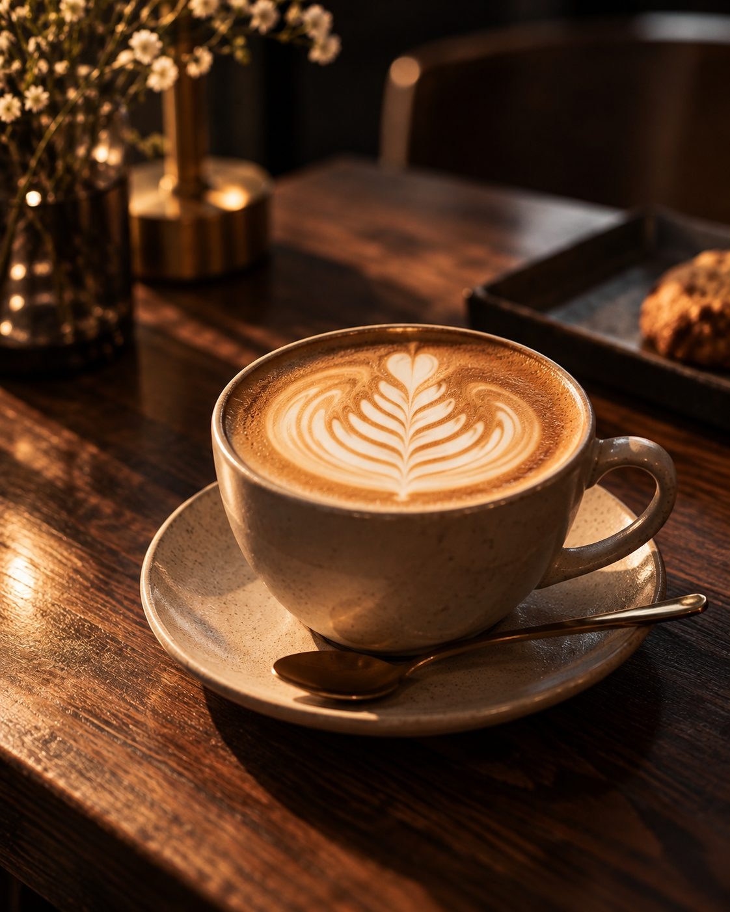
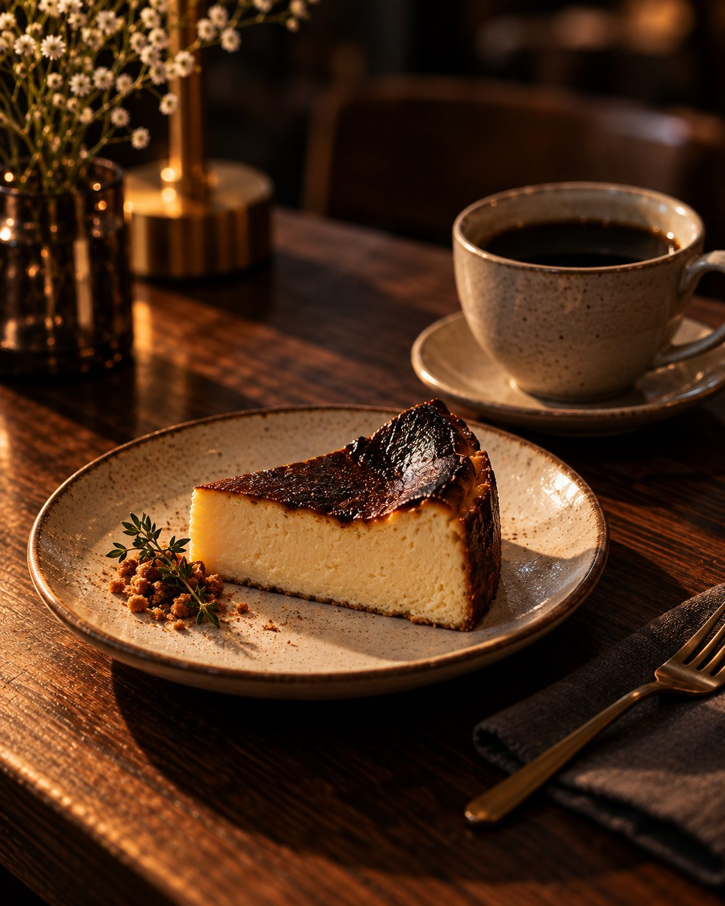

Food & Drink
Menu
メニュー
豆の個性を引き出す焙煎と、
一杯ずつ丁寧な抽出を。
※ 商品名・価格はすべて架空の設定です（税込表記）
01
Coffee
コーヒー
エスプレッソには深煎りの「Nook Blend」を使用。ハンドドリップは季節ごとに入れ替わる単一農園の豆からお選びいただけます。
-
Seasonal Pour OverSignature
¥750〜
季節のハンドドリップ
エチオピア、ケニア、コロンビアなど、その時期にいちばん美味しい豆を2〜3種類ご用意しています。
-
Nook Blend LatteSignature
¥700
ヌック ブレンド ラテ
ビターチョコレートのような深煎りブレンドと、なめらかなミルク。
-
Espresso
¥500
エスプレッソ
-
Americano
¥550
アメリカーノ（ホット／アイス）
-
Flat White
¥650
フラットホワイト
-
Cappuccino
¥650
カプチーノ
-
Cold Brew
¥650
水出しコーヒー
12時間かけてゆっくり抽出。すっきりとした甘みが特徴です。
02
Tea & Others
ティー・その他のドリンク
コーヒーが苦手な方にも楽しんでいただける、香りのよいドリンクをそろえています。

-
Roasted Chestnut Hojicha LatteAutumn
¥780
焼き栗とほうじ茶のラテ（秋季限定）
香ばしいほうじ茶に、自家製の焼き栗ペーストを合わせました。
-
Hojicha Latte
¥680
ほうじ茶ラテ
-
Chai Latte
¥680
チャイラテ
-
Earl Grey
¥600
アールグレイ（ポットサービス）
-
Homemade Lemonade
¥600
自家製レモネード
03
Sweets
焼き菓子・デザート
毎朝、店内の小さなオーブンで焼き上げています。売り切れの際はご容赦ください。

-
Basque CheesecakeSignature
¥600
バスクチーズケーキ
-
Seasonal Fruit Tart
¥680
季節のフルーツタルト
-
Chocolate Terrine
¥580
ガトーショコラ テリーヌ
-
Canelé
¥380
カヌレ
-
Butter Scone
¥420
バタースコーン（クロテッドクリーム添え）
04
Food
軽食
朝食やランチにぴったりの軽食。ドリンクとセットで ¥150 引きになります。
-
Butter Toast
¥450
厚切りバタートースト（〜11:00）
-
Ham & Cheese Sandwich
¥850
ハムとチーズのホットサンド
-
Seasonal Quiche
¥780
季節野菜のキッシュ（サラダ付き）
05
Beans
コーヒー豆の販売
店頭で焙煎した豆をお持ち帰りいただけます。ご希望に合わせて挽いてお渡しします。
-
Nook Blend 200g
¥1,800
ヌック ブレンド（深煎り）
-
Single Origin 200g
¥2,200〜
シングルオリジン（季節の豆）
-
Drip Bag Set
¥1,000
ドリップバッグ 5個入り